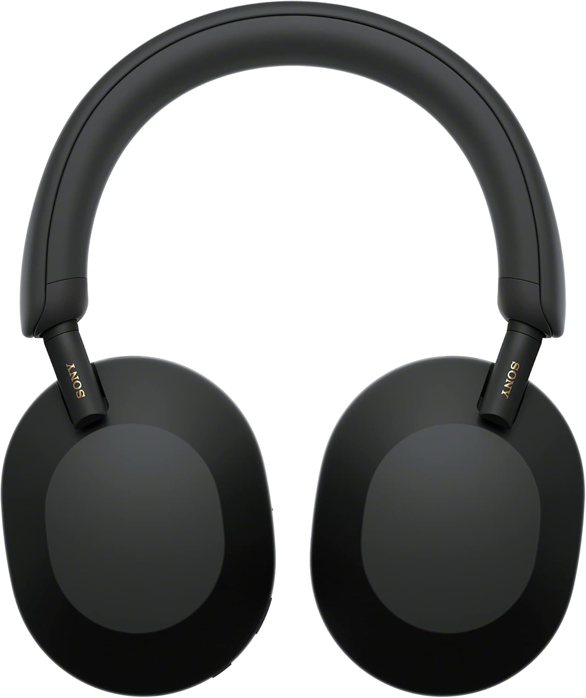

Sony WH-1000XM5 Review (2026): Industry Standard ANC Revisited
TL;DR Verdict
The Sony WH-1000XM5 upholds its legacy as the benchmark for active noise-canceling headphones. Combining best-in-class multi-microphone noise suppression with the high-resolution LDAC codec, these headphones deliver precision audio tailored for strict focus environments. While the stepless slider design trades folding portability for enhanced aesthetic flow, it remains a definitive choice for long-haul commuters and remote engineers.

Who is it for?
- Frequent flyers needing aggressive low-end ANC
- Developers working in open-office environments
- Android users leveraging LDAC high-res streaming
Who should skip?
- Extreme minimalists needing compact folding headphones
- Hardcore audiophiles seeking uncolored, flat studio references
- Users predominantly bound to the Apple spatial audio ecosystem
The landscape of premium wireless audio is fiercely fought, but the Sony WH-1000XM5 continues to reign as one of the most mechanically sophisticated pieces of headgear available. Moving away from the click-heavy ratcheting hinges of its predecessors, the XM5 implements a sleek, silent stepless slider and synthetic leather profile. But aesthetic changes merely cover the true advancements hidden beneath the earcups. Equipped with a tandem system of two specialized processors the Integrated Processor V1 and the HD Noise Canceling Processor QN1 alongside eight strategically placed microphones, the noise-canceling execution is computationally intense and stunningly effective. Whether you are aiming to drown out the subsonic drone of an aircraft engine or the chaotic chatter of a crowded cafe, the hardware here acts less like a filter and more like an absolute acoustic barrier.
For a head-to-head breakdown with the Bose QuietComfort Ultra, see our comparison Sony XM5 vs Bose QC Ultra .
Product Overview
Sony engineered the WH-1000XM5 not just as a listening device, but as an active workspace tool. The redesign trims the fat, utilizing a rigid but lightweight chassis totaling just 250 grams. Inside the sealed earcups, Sony pivoted to newly engineered 30mm carbon fiber drivers. While smaller than the previous generation's 40mm units, the carbon dome increases dome rigidity and significantly improves high-frequency detail retrieval and bass tightness. They operate on Bluetooth 5.2, bringing robust multi-point connectivity. You can effortlessly bridge the cans between an iPhone for calls and a Windows laptop for audio, with the firmware intelligently prioritizing the audio stream. Power metrics maintain a comfortable threshold, offering up to 30 hours of continuous active playback with noise cancellation fully engaged.
Key Specifications
| Specification | Details |
|---|---|
| Driver Unit | 30mm, Carbon Fiber Dome |
| Active Noise Cancellation | Dual Processor (V1 & QN1), 8 Microphones |
| Supported Codecs | LDAC, AAC, SBC |
| Battery Life | 30 Hours (ANC On) / 40 Hours (ANC Off) |
| Bluetooth Version | Bluetooth 5.2 (Multipoint Support) |
| Weight | 250g (8.8oz) |
| Charging | USB-C (3 Min Charge = 3 Hours Playback) |
Pros and Cons
The Good
- Class-leading, adaptive Active Noise Cancellation
- Exceptional microphone array for perfectly clear voice calls
- Carbon fiber drivers yield tight, articulate sub-bass
- Lightweight frame reduces long-term wearing fatigue
The Bad
- Chassis does not fold inwards like the XM4
- No official IP/water resistance rating
- Included carrying case is quite large

Real-World Use Cases
The application of these headphones spans a wide spectrum of professional scenarios. For a direct technical comparison against the other premium titans, see our side-by-side showdowns:
- The Frequent Traveler: The dual processors effortlessly erase low-frequency rumble in airline cabins. Moreover, the auto-optimizer adjusts ANC calibration depending on wearing conditions and atmospheric pressure, ensuring altitude doesn't impact performance.
- The Remote Worker: Deep integration with Sony's Voice Pickup technology leverages AI machine learning to isolate your voice. Running Zoom calls in a busy coffee shop no longer requires apologizing for background noise; the mic simply cuts it out.
- The Mobile Video Editor/Podcast Monitor: Leveraging LDAC on supported Android arrays ensures minimal compression artifacts. For audio scrubbing and casual video timeline monitoring, the resolution retrieval is more than adequate.
Upgrade Your Workspace Focus
Experience unmatched isolation and precision audio engineering.
Check Current Price on AmazonSound Signature & Testing Notes
Sony's house sound typically favors a robust, somewhat colored low-end, and the XM5 follows this tradition, but with noticeably more restraint and maturity than its predecessors. The 30mm carbon drivers exhibit excellent transient response. The sub-bass extends remarkably low but refrains from bleeding into the lower midrange, a common pitfall of consumer-grade ANC cans. During testing, vocal tracks held center stage with impressive clarity and forward presence, while cymbal crashes and high-hats retained their shimmer without edging into sibilance. For users on compatible devices, switching to the LDAC codec unleashes maximum bitrate (up to 990 kbps), dramatically expanding the soundstage width and resolving the subtle spatial cues often lost in standard AAC streaming.
Comfort & Build
Transitioning to a minimalist aesthetic, the structural integrity of the XM5 relies on fewer moving parts. The headband is notably thinner, padded with a soft synthetic leather that gently disperses the 250g weight across the crown of the head. Clamp force is meticulously calibrated firm enough to provide excellent passive isolation, yet gentle enough to completely negate a pressure headache during an eight-hour coding sprint. Due to the stepless sliding mechanism, adjustments occur smoothly rather than in ratcheted increments, guaranteeing a micro-precise fit for any head shape.
Battery & Charging Expectations
A persistent strength of the WH series is battery resilience. Activating full noise cancellation yields roughly 30 hours of continuous operation in real-world metrics, easily covering a week's worth of standard commutes. Perhaps more impressive is the USB-PD-compatible fast charging protocol; plugging them into a standard high-wattage tech-hub adapter for merely 3 minutes rapidly pushes 3 hours of playback capacity into the cell. While lacking wireless tethering, the wired redundancy operates perfectly.
Final Verdict
The Sony WH-1000XM5 succeeds in cementing its position as the apex predator in the consumer ANC market. Through rigorous computational audio processing, the noise cancellation capabilities create absolute dead-zones of silence, invaluable for any serious professional needing uninterrupted focus. Pair that with stellar call quality, high-resolution LDAC support, and plush ergonomics, and you have a nearly undeniable package for the modern worker. While the Sony XM5 is king for overall features, those who prioritize pure comfort and silence might want to read our full Bose QC Ultra review , which we found to have a slight edge in active noise cancellation.
Frequently Asked Questions
Do the Sony WH-1000XM5 support simultaneous multi-point Bluetooth?
Yes, they support multi-point connection allowing you to paired to a laptop and a phone simultaneously, smoothly prioritizing incoming calls.
How does the XM5 hold up during phone or Zoom calls?
The microphone array utilizes AI noise reduction specifically tuned to isolate your voice from background clamor. It is highly effective for Zoom calls in public or noisy environments.
Is LDAC noticeably better than standard Bluetooth codecs?
Yes, for high-resolution audio files (FLAC, Apple Lossless), LDAC allows up to three times more data transmission, resulting in distinctly broader dynamic range and finer detail.
Can I use the headphones while they are charging?
No, the headphones power off when the USB-C charging cable is connected. However, a 3-minute quick charge yields roughly 3 hours of playback.